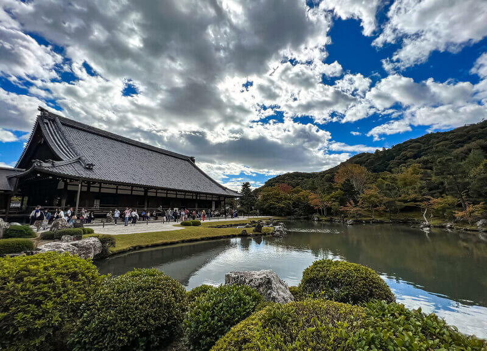
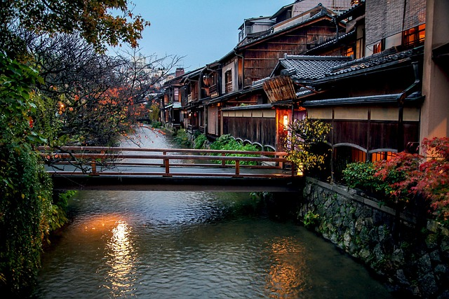
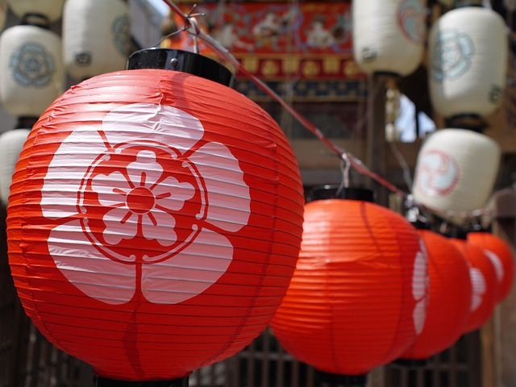

Sobre Kioto
Fundada en el año 794, Kioto fue la capital imperial de Japón durante más de 1,000 años, desde el período Heian hasta 1868. Esta ciudad de 1.5 millones de habitantes es el corazón cultural y espiritual del país.
Ubicación Estratégica
Situada en el centro de Honshu, rodeada de montañas en tres lados, lo que la protegió de bombardeos durante la Segunda Guerra Mundial.
Patrimonio Mundial
17 sitios declarados Patrimonio de la Humanidad por UNESCO, incluyendo templos, santuarios y el castillo Nijō.
Arquitectura Sagrada
Más de 2,000 templos budistas y santuarios sintoístas preservan la arquitectura tradicional japonesa.
Artes Tradicionales
Cuna de la ceremonia del té, ikebana (arreglo floral), teatro Noh y la cultura de las geishas.
La ciudad ofrece una experiencia única donde lo antiguo y lo moderno conviven armoniosamente. Desde el distrito de Gion con sus casas de té tradicionales, hasta el moderno distrito de Kawaramachi, pasando por el Camino del Filósofo, un sendero de 2 km bordeado de cerezos.
Las cuatro estaciones transforman la ciudad: la floración de cerezos (sakura) en marzo-abril, el verde intenso del verano, los colores rojizos del otoño (momiji) en noviembre, y los jardines nevados en invierno crean paisajes únicos en cada visita.
Atracciones destacadas

Gion
Barrio tradicional famoso por las geishas y casas de té.
Kinkaku-ji
El famoso Pabellón Dorado sobre el estanque.

Fushimi Inari
Caminos entre miles de torii rojos.

Jardines Zen
Rincones para meditar y desconectar.
Inspírate
Imágenes que capturan la esencia de cada rincón
Sakura en Primavera
Los cerezos en flor transforman la ciudad en un paraíso rosa
Templos Sagrados
Arquitectura tradicional que conecta con lo divino
Jardines Zen
Rincones para meditar y desconectar del mundo
Cultura Tradicional
Geishas y tradiciones milenarias vivas

Bosque de Bambú
Senderos mágicos entre cañas gigantes

Primavera en Kioto
Cerezos en flor iluminan las calles tradicionales

Pagoda y Sakura
La icónica pagoda rodeada de flores de cerezo
- Antigua capital imperial de Japón
- 17 sitios Patrimonio de la Humanidad
- Más de 2,000 templos y santuarios
Viví la Experiencia
Descubre la magia en este recorrido virtual
Seguí explorando...
Encontranos en Kioto
Visita nuestra oficina en el corazón de la ciudad
Kioto Tour Agency
Dirección:
Kawaramachi-dori, Shijo-agaru
Nakagyo-ku, Kioto 604-8042
Japón
Horario:
Lunes a Viernes: 9:00 - 18:00
Sábados: 10:00 - 16:00
Domingos: Cerrado
Acceso:
Estación Kawaramachi (Línea Hankyu)
5 minutos a pie
Contacto
¿Tienes preguntas sobre tu viaje? ¡Contáctanos!
kiotour@example.com
+81 75-123-4567
Japón